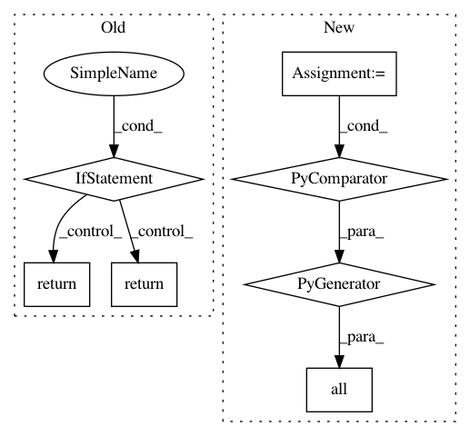

9423dc741a1da8ffbee5d9b7ae6a49d00d3ed151,deepvariant/vcf_stats.py,,_get_variant_type,#Any#,66
Before Change
def _get_variant_type(variant):
Returns the type of variant as a string.
if variant_utils.is_biallelic(variant):
if variant_utils.is_snp(variant):
return "SNP"
elif variant_utils.is_insertion(variant.reference_bases,
variant.alternate_bases[0]):
return "Insertion"
elif variant_utils.is_deletion(variant.reference_bases,
variant.alternate_bases[0]):
return "Deletion"
return "Other"
def _tstv(variant, vtype):
After Change
insertion = all(
variant_utils.is_insertion(variant.reference_bases, alt)
for alt in variant.alternate_bases)
deletion = all(
variant_utils.is_deletion(variant.reference_bases, alt)
for alt in variant.alternate_bases)
if biallelic:
if snp:
return BIALLELIC_SNP
In pattern: SUPERPATTERN
Frequency: 4
Non-data size: 7
Instances
Project Name: google/deepvariant
Commit Name: 9423dc741a1da8ffbee5d9b7ae6a49d00d3ed151
Time: 2019-06-13
Author: sidharthgoel@google.com
File Name: deepvariant/vcf_stats.py
Class Name:
Method Name: _get_variant_type
Project Name: google/deepvariant
Commit Name: af5e6d9aa0e76219e8a83867d9be9b97fc53eb51
Time: 2019-03-12
Author: no-reply@google.com
File Name: deepvariant/tf_utils.py
Class Name:
Method Name: compression_type_of_files
Project Name: keras-team/autokeras
Commit Name: c2115ea5f462acdff07919f68ecc77339b47e486
Time: 2021-02-26
Author: Anselm.Hahn@gmail.com
File Name: autokeras/blocks/reduction.py
Class Name: Merge
Method Name: _inputs_same_shape
Project Name: microsoft/nni
Commit Name: b7366b685afdde156e551f8ba5008857f789e368
Time: 2019-02-11
Author: 871886504@qq.com
File Name: tools/nni_annotation/code_generator.py
Class Name:
Method Name: test_variable_equal